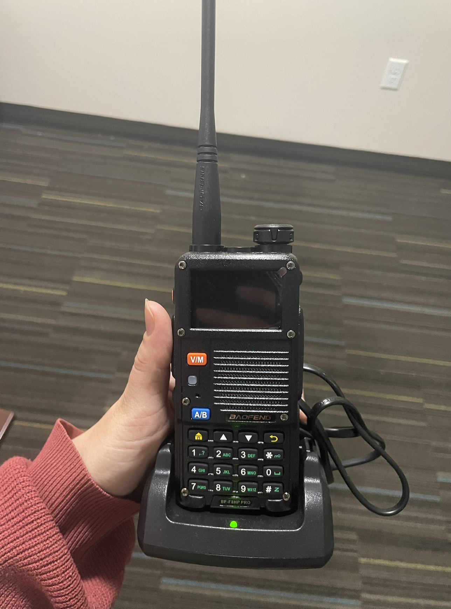

As a member of the Radio Society, I regularly participate in hands-on activities that go beyond theory. I’ve worked with radio equipment, built antennas, and learned how communication systems function in real-world scenarios. These meetings have helped me develop a deeper understanding of signal transmission, troubleshooting, and how hardware and software interact in communication systems. It’s also been a great environment to collaborate with others who share an interest in technology and experimentation.
